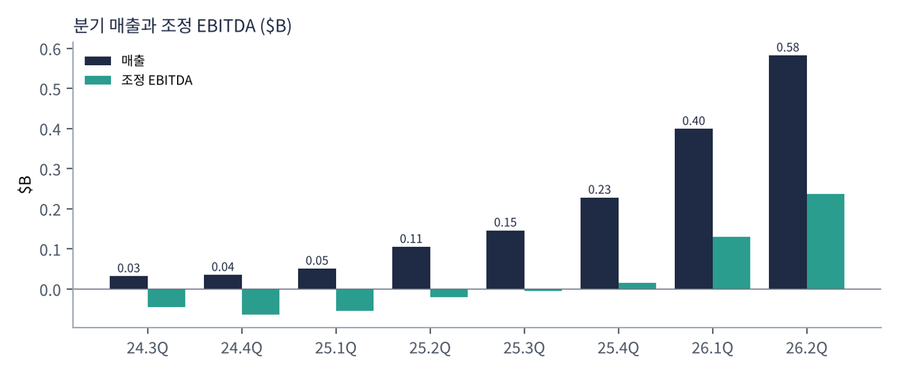
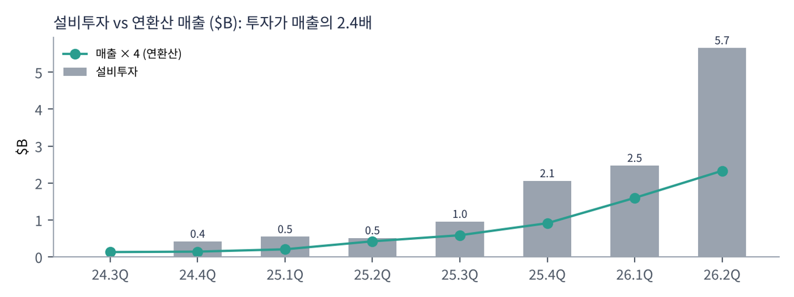
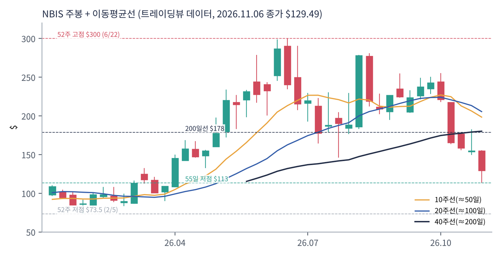
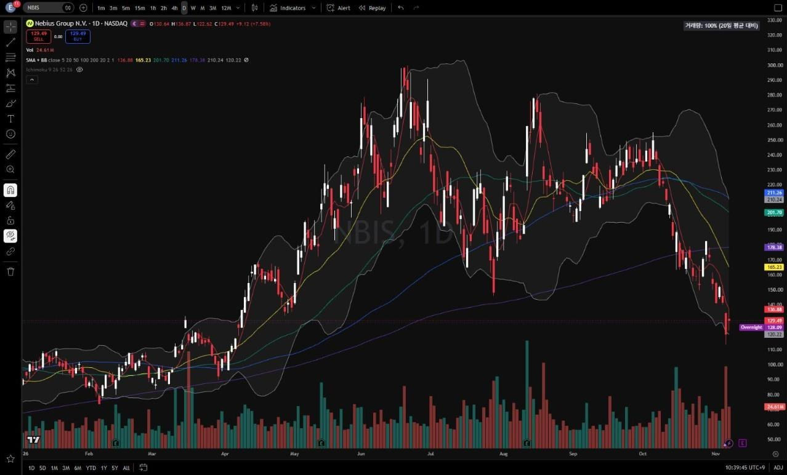
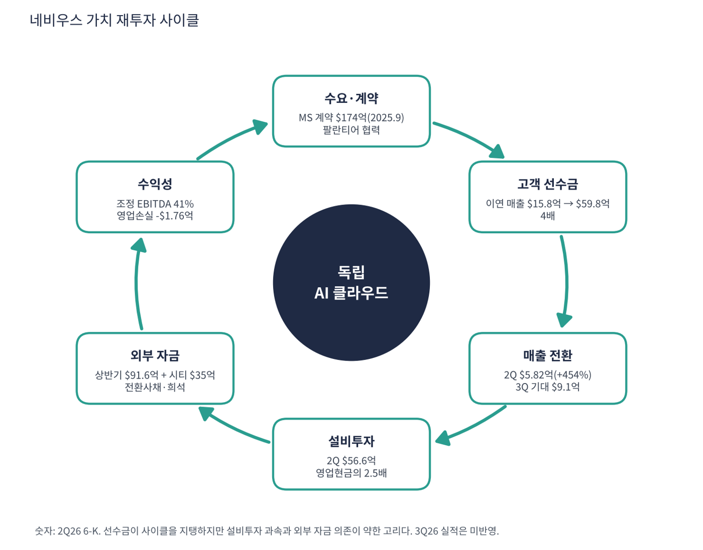

네비우스는 러시아 기술 기업 얀덱스가 2024년 러시아 사업을 매각하고 남은 해외 자산으로 만든 유럽계 AI 클라우드 회사다. 핀란드·네덜란드·미국에 GPU 데이터센터를 짓고 AI 기업에 연산을 빌려주며, 자율주행 아브라이드·교육 트리플텐·클릭하우스 지분도 갖고 있다. 코어위브보다 재무는 탄탄하지만 같은 'AI 인프라 신용 우려'에 묶인, 선수금으로 성장을 자금 조달하는 GPU 클라우드다. 실적(3Q)이 11월 12일 전후로 예정돼 있어 이 보고서에는 반영하지 못했다.
| 항목 | 내용 |
|---|---|
| 종목 | Nebius Group N.V. (NBIS) · NASDAQ · AI 클라우드 · 본사 네덜란드 암스테르담 (분기 보고서 대신 6-K 보도자료 제출) |
| 시가총액 | 약 $352억 · P/S 24.5배 · 순손실이라 PER 없음 (11/6 종가 $129.49) |
| 최근 분기(2Q26) | 매출 $5.82억(+454%), 조정 EBITDA $2.36억(마진 41%), 영업손실 -$1.76억, 계속영업 순손실 -$1.90억 |
| 현금·부채 | 현금 $80.4억, 차입금 $85.5억(대부분 전환사채), 이연 매출(선수금) $59.8억, 자기자본 $103.4억 |
| 투자 | 2Q 영업현금 $22.5억(선수금 효과), 설비투자 $56.6억 |
| 자금 조달 | 상반기 재무활동 현금 $91.6억(전환사채 $43억, 자사주 매각 $28억, 워런트 $20억), 10월 시티 $35억 금융 약정 |
| 다음 실적 | 3Q26 실적: 이 보고서 작성 직후 발표 예정. 시장 기대 매출 약 $9.1억(트레이딩뷰 요약) — 미반영 |
| 직책 | 인물 | 역할·특징 |
|---|---|---|
| 창업자·CEO | 아르카디 볼로즈 | 얀덱스 공동창업자 출신. B주 의결권 강화로 창업자 지배 구조. 러시아 출신 이미지에 대한 일부 우려가 있다 |
경영 스타일: '고객 선수금과 외부 자금으로 용량을 먼저 깐다'. 2025년 9월 마이크로소프트와 최대 $174억 GPU 공급 계약(당시 발표)을 맺은 뒤 설비투자를 분기 $4억대에서 $56.6억까지 키웠다. 자금은 전환사채·자사주 매각·워런트·시티 $35억 약정으로 다변화하고 있다. 경영진 코멘트와 가이던스는 주주서한·컨퍼런스콜에 있어 이번 자료에는 포함하지 못했다.
GPU 인프라 + 학습·추론 소프트웨어 + 데이터 도구를 직접 개발한다(얀덱스 출신 엔지니어 역량). 추론을 토큰 단위로 파는 '토큰 팩토리'와 10월 인퍼라이즈 인수가 추론 시장 확대 축이다.
빅테크 클라우드에 묶이지 않으려는 기업·정부, 그리고 GPU가 모자란 빅테크 자신이 고객이다. 팔란티어가 네비우스를 소버린 AI 인프라 파트너로 지정했다(9월).
| 분기 | 매출 | 조정 EBITDA | 영업이익 | 계속영업 순이익 | 설비투자 | 특이 사항 |
|---|---|---|---|---|---|---|
| 2024.3Q | $0.32억 | -$0.46억 | – | -$0.44억 | – | |
| 2024.4Q | $0.35억 | -$0.64억 | -$1.37억 | -$1.23억 | $4.2억 | |
| 2025.1Q | $0.51억 | -$0.54억 | -$1.20억 | -$1.04억 | $5.4억 | |
| 2025.2Q | $1.05억 | -$0.21억 | -$1.11억 | $5.03억 | $5.1억 | 지분 평가이익 |
| 2025.3Q | $1.46억 | -$0.05억 | -$1.30억 | -$1.20억 | $9.6억 | MS 계약 |
| 2025.4Q | $2.28억 | $0.15억 | -$2.35억 | -$2.50억 | $20.6억 | EBITDA 흑자 |
| 2026.1Q | $3.99억 | $1.30억 | -$1.28억 | $6.21억 | $24.7억 | 지분 평가이익 $7.8억 |
| 2026.2Q | $5.82억 | $2.36억 | -$1.76억 | -$1.90억 | $56.6억 | 설비투자 급증 |


흐름 요약: 분기 매출이 2년 만에 $0.32억에서 $5.82억으로 18배가 됐고, 조정 EBITDA는 4Q25에 처음 흑자로 돌아선 뒤 두 분기 만에 마진 41%가 됐다. 순이익은 클릭하우스 등 지분 평가이익($6~8억) 때문에 흔들릴 뿐 본업은 영업손실이다. 감가상각이 분기 $2.6억(매출의 45%)이기 때문이다. 설비투자가 매출을 압도한다. 2Q 설비투자 $56.6억은 연환산 매출($23억)의 2.4배다. 영업현금이 2분기 연속 $22억대로 들어온 것은 고객 선수금(이연 매출 $15.8억 → $59.8억) 덕분이다. 3Q24 영업이익·설비투자 등 일부는 연간 수치에서 역산해 표시하지 못했다('–').
| 구성 | 돈을 버는 방식 | 비고 |
|---|---|---|
| AI 클라우드 (핵심) | GPU 클러스터 장기 계약(마이크로소프트 등 대형 고객), 셀프서비스 GPU 임대, 추론 플랫폼 '토큰 팩토리'(토큰당 과금) | 매출 대부분. 이연 매출 $59.8억 |
| 아브라이드 | 자율주행차·배달 로봇 개발 | 비핵심, 손실 가능 |
| 트리플텐 | IT 직무 재교육 온라인 교육 | 비핵심 |
| 지분 투자 | 클릭하우스, 톨로카 지분 $16.1억(비상장) | 평가이익이 순이익을 크게 흔듦 |
'대형 계약 + 개발자 플랫폼'을 동시에 한다. 코어위브가 대형 AI 연구소 중심이라면 네비우스는 대형 계약(마이크로소프트·메타)과 함께 스타트업·개발자가 직접 쓰는 셀프서비스 클라우드와 추론 플랫폼을 키운다. 원가 구조는 매출 대비 원가 23%, 연구개발 33%, 판관비 30%, 감가상각 45%이며, 총비용이 매출의 206%에서 130%로 내려왔다(1년 전 대비).
회사 소개가 목표를 요약한다. 개발자와 기업이 AI의 미래를 직접 책임질 수 있도록 데이터와 모델 학습부터 실제 배포까지 풀스택 플랫폼을 만드는 것이다.
| 축 | 최근 움직임 |
|---|---|
| 풀스택 AI 클라우드 | GPU 인프라 + 학습·추론 소프트웨어 + 데이터 도구를 직접 개발 |
| 소버린 AI | 팔란티어가 소버린 AI 인프라 파트너로 지정(9월). 유럽·미국 정부·기업의 데이터 주권 수요 |
| 추론 시장 | 토큰 팩토리, 10월 인퍼라이즈 인수 |
| 자금 조달 다변화 | 전환사채, 자사주 매각, 워런트, 시티 $35억 약정 |


위: 트레이딩뷰 주봉 데이터로 재구성(10·20·40주선). 아래: 트레이딩뷰 공개 차트 일봉 캡처(작도 숨김, 이동평균선·볼린저밴드만 표시).
| 이동평균 | 값 | 종가 대비 | 해석 |
|---|---|---|---|
| 5일선 | $136.88 | -5.4% | 금요일 반등으로 근접 |
| 20일선 | $165.23 | -21.6% | 10월 갭 |
| 50일선 | $201.70 | -35.8% | 가파르게 하락 중 |
| 100일선 | $211.26 | -38.7% | 8~10월 박스 중심 |
| 200일선 | $178.38 | -27.4% | 10월 말 이탈 |
주봉 흐름: 2025년 9월 마이크로소프트 계약으로 $65에서 급등 → 6/22 고점 $300 → 7월 $146 → 8월 실적 주 +49% → 10월 둘째 주부터 4주 만에 $255 → $113(-56%) → 11/6 $129.5 마감(금요일 +7.6% 반등). 스캐너상 11/9는 +9.2%(약 $141.5)로 단기 반등이 이어졌으나 이 보고서는 11/6 종가 기준으로 통일했다.
| 규칙 | 기준 | 현재 값 | 신호 |
|---|---|---|---|
| 장기 추세 필터 | 종가 vs 200일선 | $129.49 < $178.38 | 매도 |
| 중장기 교차 | 50일선 vs 200일선 | $201.70 > $178.38 | 매수 |
| 단기 교차 | 20일선 vs 50일선 | $165.23 < $201.70 | 매도 |
| 돈키언 채널 | 55일 고가 $255.10 / 저가 $113.30 | 중간값 $184.20 아래 | 매도 |
| 1개월 모멘텀 | 21거래일 수익률 | -41.1% (기준 $219.71) | 매도 |
| 3개월 모멘텀 | 63거래일 수익률 | -29.7% (기준 $184.11) | 매도 |
| 6개월 모멘텀 | 126거래일 수익률 | -26.9% (기준 $177.05) | 매도 |
| 12개월 모멘텀 | 252거래일 수익률 | +10.7% (기준 $117.00) | 매수 |
| 종합 (8개 평균) | -0.50 | 매도 우위 |
해석: 12개월 모멘텀만 매수인데 기준가($117)에 가까워 $117 아래로 내려가면 바로 매도로 바뀐다. 50일선도 200일선을 향해 빠르게 내려와 며칠~몇 주 안에 -0.75~-1.00으로 더 약해질 가능성이 크다. 14일 ATR $15.71 (12.1%). 실적 발표일에는 ±20% 이상도 가능하다(8월 실적 주 +49%).
| 가격 | 무엇이 바뀌나 | 의미 |
|---|---|---|
| $117 이탈 | 12개월 기준가 | 마지막 모멘텀 매수 신호 소멸 |
| $137 ~ 165 | 5일선, 20일선, 10월 갭 | 단기 반등 확인 구간 |
| $178 ~ 184 | 200일선, 돈키언 중간값, 3개월 기준 | 3개 신호 매수 전환 |
| 구분 | 가격대 | 근거 |
|---|---|---|
| 저항 2 | $155 ~ 165 | 10월 말 박스, 20일선 |
| 저항 1 | $137 ~ 145 | 5일선, 4월 돌파 구간 |
| 지지 1 | $113 ~ 117 | 11월 저점, 12개월 기준가 |
| 지지 2 | $90 ~ 100 | 2026년 1~3월 박스 상단 |
같은 GPU 클라우드라도 코어위브보다 재무는 탄탄하나 주가는 업종 신용 우려에 함께 움직인다. 3Q 실적이 곧 나오므로 실적 확인 후 $125~135에서 계획 비중의 30%만 진입하고 손절은 $108이다. 목표는 1차 $145(4월 돌파 구간), 2차 $165(20일선·갭). 조건은 3Q 매출 $9억 이상, 연간 매출·설비투자 계획 유지, 추가 증자 없음이다. $113 이탈은 신저점, $108 종가 이탈이면 손절하며 $90~100 박스까지 열려 있다. 실적 전 신규 진입은 위험하다.
| 악재 요인 | 내용 | 강도 |
|---|---|---|
| 설비투자 부담 | 분기 $56.6억, 연환산 매출의 2.4배. 런웨이 1.4~3.4분기(가정별) | 높음 |
| 고객 집중 | 대형 계약(마이크로소프트 등) 비중이 큼 | 중간~높음 |
| 희석 | 전환사채·워런트·주식 매각이 이어짐 | 중간 |
| 실적 변동 | 3Q 기대 매출 $9.1억(+56% 분기 성장). 미달 시 변동 큼 | 중간~높음 |
| 경쟁·지배구조 | 코어위브·하이퍼스케일러·오라클·람다 경쟁, B주 의결권 창업자 지배 | 참고 |
| 티커 | 회사 | 시가총액 | PER(TTM) | PEG | P/S | EPS 성장(YoY) |
|---|---|---|---|---|---|---|
| NBIS | 네비우스 | $35B | 적자 | – | 24.52배 | – |
| CRWV | 코어위브 | $26B | 적자 | – | 3.19배 | – |
| ORCL | 오라클 | $351B | 18.2배 | 0.37 | 4.70배 | +48% |
| DELL | 델 | $209B | 19.1배 | 0.12 | 1.34배 | +153% |
| MSFT | 마이크로소프트 | $3,940B | 27.7배 | 0.74 | 11.09배 | +36% |
| NVDA | 엔비디아 | $4,498B | 23.6배 | 0.20 | 15.63배 | +125% |
적자는 PER 산출 불가를 뜻한다. 델·엔비디아는 GPU 공급 측, 나머지는 클라우드 수요 측 비교용이다.
비교 결론: 네비우스의 P/S 24.5배는 같은 GPU 클라우드인 코어위브(3.4배)의 7배, 오라클(4.7배)의 5배다. 네비우스의 재무가 코어위브보다 낫다는 점이 이 프리미엄을 일부 설명하지만, 이익이 없는 상태에서 성장 기대(3Q +56%)가 가격의 대부분이다. PER이 있는 마이크로소프트·엔비디아·오라클·델은 20배 안팎이거나 그 아래라서 비교 대상이 되기 어렵다.
네비우스는 선수금이 영업현금을 만드는 회사다. 현금 $80.4억과 시티 약정 $35억이 있지만 분기 설비투자가 $56.6억이라 '런웨이'(현금이 버틸 수 있는 기간)를 가정별로 계산했다.
| 지표 | 값 | 계산·출처 | 해석 |
|---|---|---|---|
| 현금 | $80.4억 | 2Q26 재무상태표 | 연초 $36.8억에서 증가 |
| 영업현금흐름 (2Q) | $22.5억 | 회사 발표 | 선수금 증가 효과가 큼 |
| 선수금 제외 영업현금 (상반기) | 약 $0 (내 추정) | 상반기 영업현금 ≈ $44억+, 선수금 증가 $44억 | 본업 현금 창출은 아직 없음으로 추정 |
| 설비투자 (2Q) | $56.6억 | 회사 발표 | 영업현금의 2.5배 |
| 이연 매출 / 차입금 | $59.8억 / $85.5억 | 2Q26 | 자기자본 $103.4억, 부채비율 약 1.7배 |
| 가정 | 분기 순소진 | 런웨이 (현금 $80.4억) | 시티 $35억 포함 ($115.4억) |
|---|---|---|---|
| 선수금이 계속 들어옴 (영업현금 $22.5억) | -$34.1억 | 약 2.4분기 | 약 3.4분기 |
| 선수금 유입 중단 (영업현금 ≈ 0) | -$56.6억 | 약 1.4분기 | 약 2.0분기 |
설비투자를 2Q 수준으로 유지하고 보유 현금만으로 충당한다는 단순 계산으로, 내 가정이다. 실제로는 전환사채·증자·리스 등 외부 자금이 계속 들어와 이 기간보다 길어질 수 있다(상반기에만 $91.6억 조달). 비상장 지분 $16.1억도 자금원이 될 수 있다.
| 기준 | 매출 | P/S | 비고 |
|---|---|---|---|
| 트레이딩뷰 표시값(11/6 환산) | – | 24.5배 | |
| TTM 4분기 합 | $13.55억 | 26.0배 | 시총 $352억 ÷ $13.55억 |
| 2Q 연환산 | $23.3억 | 15.1배 | $5.82억 × 4 |
| 3Q 시장 기대 연환산 | $36.4억 | 9.7배 | 기대 $9.1억 × 4 (미발표) |
| 동종 | – | – | 코어위브 3.4~3.6, 오라클 4.7, 델 1.3 |
해석: 최근 분기를 연환산한 P/S는 15배, 3분기 기대치를 연환산하면 약 10배로 TTM(26배)보다 훨씬 낮다. 성장률이 너무 가팔라서 TTM 배수는 의미가 작고, 시장은 이미 3분기 +56% 성장을 가격에 넣고 있다. 스트레스 가정: 3Q 기대치 연환산 기준 P/S가 8배면 시총 $291억(약 $107, -17%), 6배면 $218억(약 $80, -38%), 12배면 $437억(약 $161, +24%)이다(모두 내 가정).
| 지표 | 값 | 판정 |
|---|---|---|
| 조정 EBITDA (2Q) | $2.36억 (41%) | 흑자 |
| 조정 EBITDA (TTM) | $3.76억 | 3Q25 -$0.05억 + 4Q $0.15억 + 1Q $1.30억 + 2Q $2.36억 |
| 영업이익 (2Q) | -$1.76억 | 적자 감가상각 $2.6억이 원인 |
| EV / EBITDA | 약 38배 (2Q 연환산) | EV ≈ 시총 $352억 + 부채 $85.5억 − 현금 $80.4억 = $357억, ÷ $9.44억 |
| 순부채 / 연환산 EBITDA | 약 0.5배 | 순부채 $5.1억. 전환사채 중심 |
조정 EBITDA는 감가상각을 빼기 때문에 영업손실과 차이가 크다. 규모가 커지면서 마진이 -$0.46억 → +41%로 올라온 속도는 빠르지만, 설비투자가 EBITDA의 6배라 EBITDA만으로 건전성을 판단하면 안 된다.
| 방식 | PER | EPS 성장률 | PEG | 판정 |
|---|---|---|---|---|
| 트레이딩뷰 (TTM) | 산출 불가 | – | 산출 불가 | 계속영업 순손실 |
| PER 30배가 되려면 필요한 순이익 | 30배 | – | – | 시총 $352억 ÷ 30 = $11.7억 (2Q 순손실 -$1.90억에서 약 $13.6억 개선 필요) |
| EV/EBITDA 기반 성장 대비 배수 (내 가정) | 38배 (EV/EBITDA) | EBITDA 연 +100% 가정 | 약 0.4 | 적극 매수 |
| 같은 방식, EBITDA 성장 +50% 가정 | 38배 | +50% | 약 0.8 | 투자 적격 |
| 같은 방식, EBITDA 성장 +25% 가정 | 38배 | +25% | 약 1.5 | 기준 초과 |
판정: GAAP PEG는 산출 불가. 순이익이 적자라 PER이 없다. 참고용으로 EV/EBITDA를 EBITDA 성장률로 나눈 값을 계산했는데, 성장이 100%면 0.4, 50%면 0.8, 25%면 1.5로 성장률 가정에 따라 판정이 뒤집힌다. 이는 PEG의 변형이며 EBITDA 성장률 가정은 내 가정이다. 설비투자가 EBITDA의 6배인 점을 감안하면 EBITDA 기반 PEG가 낮아 보여도 안전하다는 뜻은 아니다. 결국 이 종목은 선수금이 계속 들어오는지, 외부 자금이 계속 열려 있는지가 핵심이다.

네비우스의 사이클은 고객 선수금이 설비투자를 일부 대신 지급하는 구조다. 수요가 강해 고객이 먼저 돈을 내고, 그 돈과 외부 자금으로 GPU를 늘리고, 늘어난 용량이 다시 매출이 된다. 코어위브보다 부채는 적지만 설비투자가 영업현금을 크게 넘는 점은 같다.
| 고리 | 현재 숫자 | 고리 강도 | 약해지는 신호 |
|---|---|---|---|
| ① 수요·계약 | 마이크로소프트 계약($174억, 2025.9 발표), 팔란티어 협력, 이연 매출 $59.8억 | 강함 | 신규 계약 둔화, 고객 집중 |
| ② 선수금 | 이연 매출 연초 $15.8억 → $59.8억(4배) | 강함 | 선수금 증가 중단 |
| ③ 매출 전환 | 2Q 매출 $5.82억(+454%), 3Q 기대 $9.1억 | 기대 부담 | 3Q 기대 미달 |
| ④ 설비투자 | 2Q $56.6억(영업현금의 2.5배), 유형자산 $130.5억 | 과속 | 가동 지연, 감가상각 부담 |
| ⑤ 외부 자금 | 상반기 $91.6억 + 시티 $35억 | 의존 | 신용 우려로 조달 비용 상승, 희석 |
| ⑥ 수익성 | 조정 EBITDA 41%, 영업손실 -$1.76억 | 개선 중 | 감가상각이 매출을 앞지름 |
구조: 강한 고리는 ①·②, 약한 고리는 ④·⑤이다. 선수금이 계속 늘어나는 한 사이클은 유지되지만, 업종 신용 우려가 커져 조달이 막히면 ④가 바로 부담이 된다.